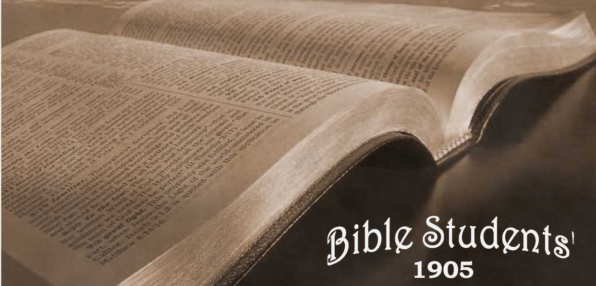
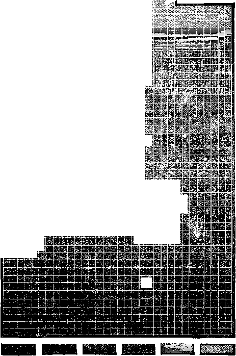

No. 69—Study to Show Thyself Approved Unto God. Christendom in Grave Danger. Refrain Thy Voice From Weeping. Hope for the Innumerable Non-Elect
ENTERED AT THE POST OFFICE, ALLELGHENY, PA., AS SECOND-CLASS MATTER
Appnwh (Sub, H workman tbat neebetb not to be asbameb, rfgbtlp bivfbino tbe worb ot trutb.
-----2 XHm.
NO work is more noble and ennobling than the reverent study of the revealed purposes of God
—“which things the angels desire to look into.” (1 Pet. 1:12.) The fact that God’s wisdom provided prophecies of the future, as well as statements regarding the present and the past, is of
2:15.
In ignorance of God’s plan for the recovery of the world from sin and its consequences, and under the false idea that the nominal church, in its present condition, is the sole agency for its accomplishment, the condition of the world to-day, after the Gospel has been preached for nearly nineteen
* itself a reproof by Jehovah of the foolishness of some of his chil-dren,who have excused Cs, their ignorance and
C? neglect of the study
of H is Word by saying: | “There is enough in
5 the fifth chapter of
Matthew to save any man.” Nor should we ’4 1 suppose that prophecy 1 I was given merely to satisfy curiosity con-V \ cerning the future. Its 0 ' object evidently is to Vj make the consecrated child of God acquainted with his Father’s plans, thus to enlist his interest and sympathy in the same plans, and ’’hi. to enable him to regard * ' both the present and the future from God’s standpoint. When thus interested in the Lord’s work, he may serve with the spirit and the understanding also; not as a servant merely, but as a child and heir. Revealing to such what shall be, counteracts the influence of what now is. The effect of careful study cannot be otherwise than strengthening to faith and stimulating to holiness.
DIAGRAM
r
a;
Exhibiting the Actual and Relative Numbers of Mankind Classified According to Religion.
Prepared by the LONDON MISSIONARY SOCIETY
H
Greek Protest-
190 millions.
ants, 116 millions.
Catholics, 84 millions.
8 millions.
Mohammedans, >70 millions.
Heathen, 8s6 millions.
Roman Jews, Catholics,
-LI 5 £^T' ____
centuries, is such as to awaken serious doubt in every thoughtful mind so misinformed. And such doubts are - not easily surmounted with anything short of the truth. In fact, to every thoughtful observer, one of two things must be apparent: either the church has made a great mistake in supposing that in the present age, and in her present condition, her office has been to convert the world, or else God’s plan has been a miserable failure. Which horn of the dilemma ~ shall we accept ? Many have accepted and many more doubtless will accept, the latter, and swell the ranks of infidelity,either covertly or openly. To assist such as are honestly falling thus, is one of our objects.
Herewith we present a diagram, published . by the “London Missionary Society,” and afterward in the United States by the “Women’s Presbyterian Board of Missions.” It is termed “A Mute
Appeal on Behalf of Foreign Missions.” It tells a sad tale of darkness and ignorance of the only name given under heaven, or among men, whereby we must be saved.
The Watchman—the “Y. M. C. A.” journal of Chicago—published this same diagram, and commenting on it said:
THE “ WATCHMAN’S ” COMMENTS.
“The ideas of some are very misty and indefinite in regard to the world’s spiritual condition. We hear of glorious revival work at home and abroad, of fresh missionary efforts in various directions, of one country after; another opening to the gospel, and of large sums being devoted to its spread,; and we get the idea that adequate efforts are being made for the evangelization of the nations, of the earth. It is estimated to-day that the world’s population is 1,424,000,000, and by studying the diagram we will see that considerably more than one-half—P^afly two-thirds—are still totally heathen, and the lexiainder are mostly either followers of Mohammed or members of those great apostate churches whose religion is practically a Christianized idolatry , and who can scarcely be said to hold or teach the gospel of Christ. Even as to the 116 millions of nominal Protestants, we must remember how large a proportion in Germany, England and this country have lapsed into infidelity—a darkness deeper, if possible, than even that of heathenism—and how many are blinded by superstition, or buried in extreme ignorance; so that while eight millions of Jews still reject Jesus of Nazareth, and while more than 300 millions who bear his name have apostatized from his faith, 170 millions more bow before Mohammed, and the vast remainder of mankind are to this day worshippers of stocks and stones, of their own ancestors, of dead heroes or of the devil himself; all in one way or other worshipping and serving the creature instead of the Creator, who is God over all, blessed forever. Is there not enough here . to sadden the heart of thoughtful Christians?
A WOEFUL PICTURE.
Truly this is a sad picture. And though the diagram represents shades of difference between Heathens, Mohammedans and Jews, all are alike in total ignorance of Christ. Some might at first suppose that this view with reference to the proportion of Christians is too dark and rather overdrawn, but we think the reverse of this. It shows nominal Christianity in the brightest colors possible. For instance, the 116,000,000 put down as Protestant is far in excess of the true number. Sixteen millions would, we believe, more nearly express the number of professing church members of adult years, and one million would, we fear, be far too liberal an estimate of the ‘‘little flock,” the “sanctified in Christ Jesus,” who “walk not after the flesh, but after the Spirit.” It should be borne in mind that a large proportion of church members, always numbered in the reckoning, are young children and infants. Specially is this the case in the countries of Europe. In many of these,, children are reckoned church members from earliest infancy. ■
But dark as this picture appears, it is not the darkest picture that fallen humanity presents. The above cut represents only the present living generations. When we consider the fact that century after century of the six. thousand years past has swept away other vast multitudes, nearly all of whom were enveloped in the same ignorance and sin, how dark is the scene! Viewed from the popular standpoint, it is truly an awful picture.
The various creeds of to-day teach that all of these billions of humanity, ignorant of the only name under heaven by which we must be saved, are on the straight road to everlasting torment; and not only so, but that all of those 116,000,00c Protestants, except the very few saints, are sure of the same fate. No wonder then, that those who believe such awful things of Jehovah’s plans and purposes should be zealous in forwarding missionary enterprises—the wonder is that they are not frenzied by it. Really to bel’eve thus, and to appreciate such conclusions, would rob life of every pleasure, and shroud 'n gloom every bright prospect of nature.
“A MUTE APPEAL.”
To show that we have not misstated ‘ ‘ Orthodoxy” on the subject of the fate of the heathen, we quote from the pamphlet—“A Mute Appeal on Behalf of Foreign Missions”—in which the diagram was published. Its concluding sentence is: “Evangelize the mighty generations abroad—the one thousand million souls who are dying in Christ-less despair at the rate of 100,000 a day.”
But though this is the gloomy outlook from the standpoint of human creeds, the Scriptures present a brighter view, which it is the purpose of these pages to point out. Instructed by the Word, we cannot believe that God’s great plan of salvation was ever intended to be, or ever will be, such a failure. It will be a relief to the perplexed child of God to notice that the Prophet Isaiah foretells this very condition of things, and its remedy, saying: “Behold, the darkness shall cover the earth, and gross darkness the people; but the Lord shall arise upon thee, and his glory shall be seen upon thee. And the Gentiles [heathen] shall come to thy light.” (Isa. 60:2, 3.) In this prophecy, the gross darkness is lighted by the bow of promise: “The Gentiles [the nations of the earth in general] shall come to thy light.”
Not only have the continued misery and darkness of the world, and the slow progress of truth, been a mystery to the church, but the world itself has known and felt its condition. ) Like that which enveloped Egypt, it has been a darkness that could be felt. In evidence of this, note the spirit of the following lines, clipped from a Philadelphia journal. The doubt and gloom, intensified by the clashing creeds of the various schools, has not yet been dispelled from the writer’s mind by the rays of divine truth direct from the Word bf God:—
FEELING AFTER GOD.
‘Life! great mystery! Who shall say What need hath God of this poor clay? Formed by his hand with potent skill— Mind, matter, soul and stubborn will; Bom but to die: sure destiny—death Then where, oh! where this fleeting breath? Not one of all the countless throng, Who lived and died and suffered long, Returns to tell the great design— That future, which is yours and mine, We plead, O God! for some new ray Of light for guidance on our way;
Based not on faith, but clearer sight, Dispelling these dark clouds of night; This doubt, this dread, this trembling fear; This thought that mars our blessings here. This restless mind, with bolder sway, Rejects the dogmas of the day Taught by jarring sects and schools, To fetter reason with their rules.
We seek to know Thee as thou art— Our place with Thee—and then the part We play in this stupendous plan, Creator, Infinite, and man.
Lift up this veil obscuring sight ; Command again: ‘Let there be light!’ Reveal this secret of Thy throne; We search in darkness the unknown.”
To this we reply:—
« THE SECRET OF THE LORD IS WITH THEM THAT REVERENCE HIM.”—Psa. 25: 14.
Life’s unsealed mystery soon shall say What joy hath God in this poor clay, Formed by his hand with potent skill,. Stamped with his image—mind and will; Bom not to die—no, a second birth Succeeds the sentence—“earth to earth.” For One of all the mighty host, Who lived and died and suffered most, Arose, and proved God’s great design— That future, therefore, yours and mine. His Word discloses this new ray Of light, for guidance on our way;. Based now on faith, but sure as sight, Dispelling these dark clouds of night; The doubt, the dread, the trembling fear, The thoughts that marred our blessings here. Now, Lord, these minds, whose bolder sway Rejects the dogmas of today, xaught by jarring sects and schools, Fettering reason with their rules, May seek and know Thee as Thou art, Our place with Thee, and then the part We play in this stupendous plan, Creator, Infinite, and man.
Uplifts the veil, revealing quite To those who walk in heaven’s light The glorious mystery of His throne Hidden from ages, now made known.
Such a blessing is now coming to the world-through the unfolding, of the divine purpose and the opening of the divine Word, of which blessing and revealing this volume we trust is a part.
Those who will turn away from the mere speculations of men, and devote time to searching the Scriptures, not excluding reason, which God invites us to use (Isa. 1:18), will find that a blessed bow of promise spans the heavens. It is a mistake to suppose that those without faith, and consequent justification, should be able to apprehend clearly the truth: it is not for such. The Psalmist says, “Light [truth] is sown for the righteous.” (Psa. 97:11.) For the child of God a lamp is provided whose light dispels from his pathway much of the darkness. “Thy word is a. lamp unto my feet, and a light unto' my path.”' (Psa. 119:105.) But it is only “the path of the just” that “is as the shining light, that shineth more and more unto the perfect day.” (Prov. 4:18.)
“HE HATH PUT A NEW SONG IN MY MOUTH.”
Actually, there is none just, “none righteous, no, not one.” (Rom. 3:10); the class referred to is “justified by faith.” It is the privilege only of this class to walk in the pathway that shines more and more—to see not only the present unfoldings of God’s plan, but also things to come. While it is true that the path of each individual-believer is a shining one, yet the special application of this statement is to the just (justified) as a class. Patriarchs, prophets, apostles and saints of the past and present have walked 'in its increasing light; and the light will continue to increase beyond the present—“unto the perfect day.” It is one continuous path, and the one continuous and increasing light is the Divine Record, illuminating as it becomes due.
Therefore, “Rejoice in the Lord, ye righteous,” expecting the fulfillment of this promise. Many have so little faith that they do not look for more light, and, because of their unfaithfulness and unconcern, they are permitted to sit in darkness,, when they might have been walking in the increasing light.
The Spirit of God, given to guide the Church into truth, will take of the things written and show them unto us; but beyond what is written we need nothing, for the Holy Scriptures are able to make wise unto salvation, through faith which is in Christ Jesus.—(2 Tim. 3:15).
These are a few pages from a volume issued by the Watch Tower Bible & Tract Society, Allegheny, Pa., U. S. A., and sold at 35 cents per volume, (post-paid) bound in embossed cloth, 350 pages; entitled, “Studies in the Scriptures.”
----BY JOHN G. WHITTIER.----
In the Minister’s morning sermon He told of the primal fall,
And how, henceforth, the wrath of God Rested on each and all; •
And how, of His will and pleasure, All souls, save a chosen few,
Were doomed to eternal torture, And held in the way thereto.
And after the painful service,
On that pleasant, bright first day, He walked with his little daughter
Thro’ the apple bloom of May.
Sweet in the fresh green meadow Sparrow and blackbird sung;
Above him its tinted petals The blossoming orchard hung.
Then up spake the little maiden, Treading on snow and pink, “O father! these pretty blossoms
Are very wicked I think.
“Had there been no Garden of Eden, There never had been a fall;
And if never a tree had blossomed God would have loved us all.”
“Hush, child!” the Father answered, “By His decree men fell;
THE SILVER LINING OF THE DARK CLOUD.
Thus the poet has graphically pictured the darkness ishich has so long oppressed God’s people; but the same God who is now lifting the curtain and bringing to light labor-saving conveniences, preparatory to the great reign of righteousness, peace and blessing, called the Millennium, is also bringing to light certain teachings in his Word bearing upon the same period, showing that he 'has yet in store for that time great spiritual blessings for men. And this is only what we should expect, according to God’s promise (Dan. 12:4, 9; 1 Thes. 5:4-6; Luke 8:10), ■?md according to our prayer, “Thy Kingdom come, thy will be done on earth as in heaven.”
In the light of this further unfolding of the Scriptures it appears that we and many of God’s people have been right in urging that God’s character would yet be cleared of the charges of injustice and cruelty so long urged against him by scoffers, and supported not only by the creeds of Christendom, but seemingly also by some darklooking passages in the Bible.
But we can only give you a mere hint of the blessing and encouragement now obtainable by those who hunger and thirst after righteousness—truth, etc. The light has come through studying God’s plan dispensationally—recognizing the various ages as connected in one great, good, loving plan which God had purposed in himself before the creation of our race, which began to be accomplished when Christ our Lord died for our sins, and which is to be fully accomplished by Christ and his Church glorified, during an age just dawning, whose light is even now waking up the world. The key to the understanding of God’s gracious plan has long lain hidden in six words in our text—“a ransom for all,” and the assurance that this favor for all shall reach them in God’s “due time,”
A book recently published by our Society sets forth the divine plan so clearly, so fully, that it has been well named “The Bible Key.” We are publishing and circulating it at absolutely cost price, 35c post paid. It is
His ways are in clouds and darkness, But He doeth all things well.
“And whether by His ordaining To us eemeth good or ill, Joy or pain, or light or shadow, We must fear and love Him still.”
“Oh, I fear Him!” said the daughter, “And I try to love Him, too;
But I wish He were kind and gentle—
Kind and loving as you.” , . J
The minister groaned in spirit, As the tremulous lips of pain, And wide, wet eyes, uplifted, Questioned his own in vain. i=
Bowing his head, he pondered The words of his little one.
Had he erred in his life-long teachings, And wrong to his Master done?
To what grim and dreadful idol - Had he lent the holiest name?
Did his own heart, loving and human, The God of his worship shame?
Thereafter his hearers noted
In his prayers a tenderer strain,*
And never the message of hatred
handsomely bound, 400 pages. It is just what every t«8® ' Christian and honest skeptic needs. Note the following X
BY THE Associate Editor of the Atlanta Constitute®.-.
FOOD AND COMFORT FOR ALL THINKERS.
“It is impossible to read this book without Icvfcf the writer and pondering his wonderful solution of th® great mysteries that have troubled us all our lives. Thes?© is hardly a family to be found that has not lost some lov®4' one who died outside the church—outside the plan of & v
vation, and, if Calvinism be true, outside of all hope .
inside of eternal torment and despair. We smother Olas’ j! T feelings and turn away from the horrible picture. We daT© not deny the faith of our fathers, and yet can it be Ijc sible that the good mother and the wandering child are forever separated?—forever and forever? fe
“I believe it is the rigidity of these teachings that makes sM atheists and infidels and skeptics—makes Christians happy and brings their gray hairs down in sorrow to th® grave—a lost child, a lost soul! * * *
“This wonderful book makes no assertions that are not well sustained by the Scriptures. It is built up stone by stone, and -upon every stone is the text, and it becomes a pyramid of God’s love, and mercy, and wisdom. . ;
“There is nothing in the Bible that the author denies or doubts, but there are many texts that he throws a flood light upon that seems to remove from them the dark and gloomy meaning. I see that editors of leading journate and many orthodox ministers of different denominations have endorsed it and have confessed to this new and cosn-forting light that has dawned upon the interpretation God’s book. Then let every man read and ponder and take comfort, for we are all prisoners of hope. This is a® age of advanced thought, and more thinking is done than ever before—men dare to think now. Light—more light is the watchword.”—C. T. Smith (“B. Arp.”)
These Old Theology Tracts, quarterly, varying in number of pages, are six cents per year. Send a postal requesting a free sample of Which is the True Gospel?*- • Food for Thinking Christians and What is the Soul?
WATCH TOWER BIBLE & TRACT SOCIETY ALLEGHENY, PA., U. S. A.
BRANCHES:—LONDON, N. w.; elb^iu^eld; ^COPENHAGEN;
STOCKHOLM; YVERDON-SUISSE; MELBOURNE.
april,
CHRISTENDOM IN GRAVE DANGER.!
THE following remarkable discourse preached in Buffalo, N.Y. January 22, 1905, we reprint from the columns of the Pittsburgh Dispatch.
“God shall send them strong delusions that they ' should believe a lie; that they all might be condemned who believed not the truth, but had N(-pleasure in unrighteousness.”—2 Thes. 2:11, 12.
The statement of the Apostle James, that God fempteth no man, is not to be understood as a ; contradiction to the language of our text. God tempteth no man to sin, to do wrong, but He has at various times sent or permitted siftings and A | nestings among those who are nominally His ! people—to separate the true from the false.
6 Sometimes a great truth becomes the sifting or 'bfi separating cause, as at our Lord’s first advent.
There our Lord’s presentation of Himself in the lesh to the covenanted nation, Israel, as the long-promised Savior, Deliverer and King, became to AL^fchat people as a whole a test,—separating the Israelites indeed from the mass of the nation— ' separating the wheat from the chaff.
Our text tells of the end or harvest time of this gospel age, and of hove the Lord will permit or ‘'"’send” strong delusions for the purpose of sifting and separating the true from the false among those who have named the name of Christ. We hold that, according to the Scriptures, we are livin : in this “harvest” period, and that the sifting of the ’“wheat” from the “tares” has begun, and that Che strong delusions mentioned in our text are coming upon Christendom.
THE FALLEN ANGELS
The Scriptures bring to our attention a class of spirit beings which fell from divine favor before -the flood. These, we are told, have from that (time until the present day been confined in chains of darkness in Tartarus—the circumambient air • of this planet. The story of these fallen angels is briefly stated three times—in Genesis 6:2; .1 Peter 3:20; 2 Peter 2:4; Jude 1:6. fl'he Old and New Testament records are thus in agreement. Additionally, however, we have a multitude of scriptures, both of the Old and New Testaments, which refer to these fallen angels as “demons”—unfortunately mistranslated “devils” in our common V’ersion.- Without exception these demons are represented as cunning, deceitful, treacherous, devilish and as having a special malignant attitude toward mankind, and as taking special delight in misleading and deceiving humanity, particularly along irreligious lines and immoralities.
' We call to your remembrance the Apostle’s statement regarding this matter, to the effect that God’s people have their struggle or contention, not wuth flesh and blood, but with wicked spirits in influential positions. Again the same Apostle points out to us that Satan is the chief leader of these spirits or demons and declares that we are not ignorant of his devices, his intrigues, his deceptions; again he styles him as wily, adroit, cunning. He informs us that the heathen world, while thinking they a.re worshiping God, are really deceived by these demons; their religious theories and practices are really demonology instead of theology.—Eph. 6:12; 2 Cor. 2:11.
TWO OPPOSING GOSPELS.
The human family is in great distress through the fall; mental, moral and physical imperfections are manifest everywhere; “there is none righteous, no, not one.” As a consequence, all are agreed to the Apostle’s broad statement, “fl’he whole creation groaneth and travaileth in pain together waiting.” (Rom. 8:22). Naturally enough the groaning ones seek for the cause of their trouble as well as for a remedy. The Bible sets forth as the cause of all earth’s woes and sorrows the brief statement, “By one man sin entered the world, and death by sin, and thus death passed upon all men, for all are sinners.” It sets forth the remedy also, namely, “Christ died for our sins, according to the Scriptures,” and at His second advent He will introduce “times of restitution of all things which God hath spoken by the mouth of all the holy prophets since the world began.” (A.cts 3:21; Rom. 5:12; 1 Cor. 15:3). This, in brief, is the Gospel of Christ.
THE GOSPEL OF THE DEMONS.
The gospel of the demons contradicts this from first to last. It denies that man ever was created in God’s image and likeness; denies that he ever fell from it into sin and death; denies that Christ ever redeemed us, and holds that we need no Brndeemer; that a process of evolution is at work which is lifting mankind from a mean ‘ and low-
brute beginning upward, to ultimately make of the race gods, and that all that is necessary for this grand result is time. As for death, demonology denies that there is death, and claims that what seems to be death is really a change from a low form of life to a higher form. This demon teaching £s to he found among all the heathen peoples and in all their religious writings, but is not at all sanctioned in the Scriptures. They teach to the contrary, as we have shown, that death is the penalty for sin; that it is a real penalty, a real death; that the dead are really dead, and that there is neither wisdom nor device nor knowledge in the grave (sheol), whither all go, and that the hope of the race lies in a resurrection, and that the hope of a resurrection lies in the redemptive work of our Lord’s first advent and in the glorious power and authority which He will exercise at His second advent. '
WHICH SIDE DO WE CHOOSE?
A pertinent question for each of us, dear friends’ at this moment is this: To which of these teachings do we give adherance? Are we holding fast “the faithful Word of God,” or are we giving heed to these seducing spirits and doctrines of devils, against which the Lord and Apostle gave so many warnings? Is our theological faith an anchor of hope holding us firmly to the truth as set forth by the Lord, or are we to any extent drawing in the original falsehood told by Satan and perpetuated by the lying spirits—the falsehood that death is not death, that our dead friends are more alive than ever before, etc.? If this be the case let us at once begin a thorough examination of the Divine Word, assured that error never sanctifies, but is always injurious, and that our Lord was right when He prayed for His disciples, “Sanctify them through Thy Truth, Thy Word is Truth.”
GOD’S WORD AND PLAN REASONABLE.
How consistent is the Word and plan of God, which, so far from speaking of death as the angel God has sent, assures us that death is our enemy, which already has taken from us many of our loved ones, blighted our lives, and will ultimately destroy-as except as we become united to the great Lifegiver, Jesus. Those who do not see that the dead are dead do not catch the full weighty import of the b’essed assurance that Christ is the Life-giver, and that He came into the world and died for our sins that we might have life, and have it more abundantly. Nor do they see the real beauty that lies in the promise of a resurrection from the dead, for if none are dead, how could there be a resurrection of the dead? Only those who clearly and1 distinctly see the Scriptural teaching on this subject are fortified against the delusions of these demons, built upon this erroneous feature of theology, which not only has permeated all heathen dom, but similarly has permeated all the creeds of Christendom, and to a large extent has made cl no effect the Word of God respecting our redemption from the grave and the hope of the resurrec ■ tion from the dead at the second coming of Christ —i Cor. 15:12, 13.
“CHRISTENDOM” RIPE FOR DELUSIONS.
The erroneous belief that the dead are alive has been to some extent for centuries offset by another error, namely, that the majority of them are con fined to a place of torment—purgatory or otherwise—and a small minority were far off enjo ing the bliss of heaven, all of which hindered the thought that they might be communed with through mediums. Besides there has been a kino, of horse sense prevailing which has restrained many from having great confidence in spirit communications. While faith was expressed a doubt ing fear was associated with it, and this doubting fear was increased by finding that some of the spirits seeking communion were ‘ lying spirits.” and although others made different presentations they were all more or less held in doubt and fear. Now, however, we are coming to a time when al: intelligent people question the fables of the Dark Ages respecting hell and purgatory, fire, devils,, pitchforks, etc.
Consequently it daily becomes easier for spiritist to find sympathy for their claims that the spirits of the dead are hovering around the living, that our atmosphere is full of them, that they are not confined' in heaven nor in hell. This thought has been aidec by many sermons on funeral occasions, depicting the dead as hovering over the friends gathered as the funeral, the assurance being given that if the dead could only speak he would say to the weeping ones, “Weep not,” etc. All of this unscripturai guess-work, presented in the name of the Bible and in the name of truth and in the name of intelligence, has had its effect upon the masses, who are now thoroughly perplexed as respects the place and condition of their dead friends. A growing intelligence forbids the thought that a God. o: love and justice has consigned them to the care cS devils in eternal flames of fire or other torture.
CONFIDENCE IN GUIDES IS SHAKEN. (
Inquiries of the clergy respecting the place an.o\ condition of the departed bring no satisfaction: the few who still tell of tortures in infernal regions are less and less believed, and the others of increas ing number who deny that the dead are in tortures are unable to give any answer respecting their whereabouts. No wonder the confiding sheep are perplexed, Oh, that they would look to the Word!.
of the Lord, that they would remember “the Lord is my Shepherd,” that they would seek from the inspired source the knowledge which their souls crave! Oh, that they might learn that the hope set before us in the Gospel of Christ is the hope of the resurrection of the dead! Mark the clearness of the Apostle’s statement on this subject—If there be no resurrection of the dead, then they that are fallen asleep in Christ are perished.—i Cor. 35:17, 18.
THE DELUSION IS SENT OF GOD.
The reason for the sending of the strong delusion mentioned in our text is plainly stated in the context, but before it can be appreciated it is necessary to have some grasp of the divine plan of the ages; it is necessary to see that the Lord’s work throughout this Gospel Age has not been, as many Suppose, an attempt to convert the world, but, as the Scriptures declare, He has been merely electing or selecting out from the world a people for His name—to be the Bride of Christ. (Acts 15:14.) We must see, too, that this elect people does not include all who become nominal members of Christian churches, but merely those who through full faith and consecration become followers of the Lord Jesus in every truth, and receive the spirit of adoption from the Father. These, through the trials and difficulties of this life, shall be proved overcomers of the world and its spirit, and accepted as joint-heirs with Christ, as His Bride in His Kingdom. This class, the Scriptures distinctly tell us, is but a little flock. Our Lord’s words are, “Fear not, little flock; it is your Father’s good pleasure to give you the kingdom.” The apostle declares also, “Not many wise, not many mighty, not many noble hath God chosen”—“Hath not God chosen the poor of this world, rich in faith, heirs of the kingdom?”—1 Cor. 1:26; James 2:5.
After we once see that only the. overcomers or kingdom class are being selected during this Gospel Age, we are ready to see that God’s great time for dealing with the majority of our race is in the future—after the second coming of Christ— during His Millennial Kingdom—whose reign of righteousness will bless and give opportunity of eternal life to all the families of the earth.
END OF THE AGE NOT END OF WORLD.
We are not of those who expect this world to be burned up. Quite the contrary, we expect its rejuvenation, its perfecting as the Garden of Eden, the paradise of God, the everlasting home of the majority of the human family—of all except the truly consecrated Church of this Gospel Age and
jt^^WATCH TOWER BIBLE “BIBLE HOUSE,
those who shall ultimately die the second death. We have no sympathy of thought, therefore, with those who are looking for the destruction of the earth; but we nevertheless believe, as the Scriptures teach, that the present age or aeon will cease and a new age or aeon begin. In error the trans= lators have rendered the word aeon “world” and given a misimpression.
More than this, we believe that the Scriptures clearly indicate that the present age is now ending and the new age, lapping with it, is beginning It is at this particular juncture that all the New
BEGINNING OF NEW AGE IMMINENT.
Testament writings, as well as our Lord’s great prophecy of Matthew 24, center, indicating a time of confusion, a trouble such as the world has never known before, and pointing out that these are judgments of the Lord designed to prepare the world for the next dispensation and the reign of the Kingdom of Righteousness. Furthermore, the Apostle distinctly points out that these judgments will begin at the House of God—the nominal church. Our Lord also points out the same things calling it a separation of wheat from tares in th® harvest or close of this age.—Matt. 13:30.
HARVEST SEPARATING OF WHEAT AND TARES.
It is because Christendom as a whole, though nominally a wheat field, is practically a tare field with a scattering of wheat intermingled that ther® is to be such a commotion in connection with the separation of the wheat and the tares. True, the Lord, who knoweth the heart, who knoweth them that are his, could easily separate them from th® others, but he has chosen to make a separation publicly to demonstrate his own justice in th® matter. Hence in this harvest time—at the proper time to separate the wheat from the tares—th® Lord not only sends the sickle of truth to gather the wheat, but he also sends the strong delusions to gather the tares.
We publish a little tract of 16 pages, entitled “Increasing Influence of Spiritism” which we offer free to all who will send us a postal card request. In it we show that the leaders of scientific and religious thought are being drawn into Hypnotism., Telepathy, Spiritism, etc., and that the results will be momentous to Christendom. We quote th® words of ministers and college professors. We alsn publish a pamphlet at 10c a pamphlet, entitled “What Say the Scriptures about Spiritism?”’--proof that it is Demonism.
AND TRACT SOCIETY^^^
ALLEGHENY, PA., U.S.A.
BRANCHES: LONDON, MELBOURNE, ELBERFELD, STOCKHOLM, COPENHAGEN, YVERDON-SUISSE.
THE WAGES OF SIN IS DEATH!
OUR LORD’S PARABLES AND DARK SAYINGS USED BY SATAN TO CONFUSE MEN.
Many sincere Christians, while pained and shocked at the doctrine of eternal torment at the hands of fireproof devils, and totally unable to reconcile such teachings with the justice and love of God’s character, as portrayed in the Scriptures, are persuaded that the Scriptures so teach, and that to discard eternal torment would be to abandon faith in the Bible as
GOD’S INSPIRED WORD.
To such specially we write, reminding them rirst of all of the Lord’s words, “Their fear toward ®e is not of me, but is taught by the precepts of wen.”—Isa. 29:13.
As you begin to get your understanding opened ©n this subject you will be surprised to find that xnost of your difficulty has resulted from attaching wrong meanings to words. For instance, such words as die, be destroyed, perish, etc., many unconsciously pervert when reading them in the 'Bible. They know the meaning of the words well mo ugh, but in the Bible attach the very opposite thoughts—live eternally, torment, devils, pitchforks, flames and anguish unutterable, etc., all associating themselves in the mind. Let us get rid of this wrong practice, which has caused so much confusion, to our minds, so much anguish to ©ur hearts and so much dishonor to our God. -
THESE AWAY, LITTLE IS LEFT.
Investigation will surprise you as to hove little of “eternal torment” is left after correcting your estimation of the meaning of words. You will find not one suggestion throughout the Old Testament to confirm your false fears. You will find not one sentence in the writings of the Apostles that gives the least hint that the world’s future is lurid flames, with devils, etc. True, they do speak of the de--xnons, but always in respect to our danger from them in the present life—“seducing spirits,” “wicked spirits in exalted positions,” and “doctrines of devils,” such as this doctrine surely is.
This must seem strange to those accustomed to thinking of the “torment” as the principal feature of the gospel,—those who have never appreciated the fact that the word gospel means not bad tidings, but the reverse, “good tidings of great joy for all people.”—Luke 2:10.
We are to remember, too, that the Epistles discuss every phase of faith and doctrine, more than any other parts of the Bible; so that the Apostle could say, “I have not shunned to declare unto you the whole counsel of God” (Acts 20:27), and again to declare “The Scriptures are able to make thee wise unto salvation”—and are “sufficient that the man of God may be thoroughly furnished unto every good work” (2 Tim. 3:15, 17). Indeed, from all that we know of Peter and Paul, they would be the last of men to keep back anyimpor-tant truth, no matter how unpleasant the duty.
On the contrary, however, we find them continually using the words die, death, destruction etc., when referring to the end of the ungodly, who repudiate God’s grace and bring upon themselves “swift destruction.” St. Paul, referring to the end of those of the Gospel Church, who repudiate Christ, says,—There remaineth for them no more a share in the sacrifice of Christ, but a sure and fearful outlook of judgment and fiery indignation which shall devour them as adversaries. (Heb. 10:26, 27). “Fiery indignation” no more means eternal torment than does “fiery trials,” or a “ fiery horse and surely “devour,” like “destroy,” means the reverse of preserve. In referring to the incorrigible e of the coming age the same Apostle says, they ‘ “shall be punished with everlasting destruction from the presence of the Lord and from the glory of his power.” Their punishment will be destruction, not preservation. It will be everlasting in that there is no resurrection for them.
DID JESUS ALONE TEACH ETERNAL TORMENT ?
The thought would be painful if true, but we must make sure of it before so deciding.
A’
When James and John, full of zeal for the honor of their Master, asked, “ Lord, wilt, thou that we call down fire from heaven, to consume these Samaritans and their city?” Jesus answered and said unto them, “Ye know not what spirit ye are of. , The Son of man is not come to destroy men’s ' lives, but to save them.” (Luke 9:56). We sometimes think that we and others vrho have held to fl,©’ the still more terrible thought of eternal torment, ‘ip did not at the time, know what spirit we were” ‘ of—nor truly interpret the spirit of Christ. J Our Lord’s “parables and dark sayings,” not understood by the people of his day. and not | generally understood yet, are very few. Excepting J. the figurative symbols of Revelation, -which few claim to understand as a whole, these are fewer ( than many suppose; for they are repeated in the various gospels in varying terms. The fact is that the translators were befogged by the "smoke” of the dark ages on this eternal torment subject.
WHAT WE PROPOSE—FREE.
On postal-card request we will be pleased to send free a double number of our Society’s journal, Zion’s Watch Tower, (as a sample), which contains a full and careful examination of every passage of the Bible containing the word hell, the Greek and Hebrew text as well as in the English. Its expositions of the parables—The Rich Man and Lazarus, and The Sheep and the Goats—are sure to be helpful and instructive whether you accept all of its deductions or not.
WATCH TOWER BIBLE & TRACT SOCIETY, Bible House, Allegheny, Pa., U. S. A.
and Thine Eyes from Tears.
THE Lord through the prophet Jeremiah sends a message of consolation for the heart of every bereaved parent trusting in Him. We read, “A voice was heard in Ramah, lamentation and bitter weeping; Rachel weeping for her children, refusing to be comforted for her children because they were not. Thus saith the Lord: Refrain thy voice from weeping and thine eyes from tears, for thy work shall be rewarded, saith the Lord; and they shall come again from the land of the enemy.”— Jeremiah xxxi: 15-17.
Five items in our text fasten our attention: First. Sorrow for the dead, which is universal, as the Apostle declares, ‘‘The whole creation groaneth and travaileth in pain together.”
Second. The nature of the comfort described —the hope of a resurrection, the hope of the recovery of the dead—“They shall come again,” they shall be restored to life.
Third. That in death our dear ones are in “the land of the enemy,” in harmony with the Apostles
, declaration, “The last enemy that shall be des-’b' jtroyed is death.”—1 Cor. 15:26.
ZjU Fourth. That the labors of the parents in en-X [ deavoring to properly rear their children are not lost, “Thy work shall be rewarded.”
Fifth. Last but not least in importance in this text is the declaration that this is the word of the 5 Lord, which cannot be broken—the word which is sure of fulfilment, however different it may be □ from the word of the man on this subject.
TEARS NOT WEAKNESS—“JESUS WEPT”
n Sorrow for the dead is not a sign of weakness, v but rather the reverse—a sign of love and sympathy, of something more than selfishness. If any demonstration of this thought were necessary it is furnished us in the statement of the shortest verse
in the Bible—“Jesus wept.” Our Lord’s tears were shed on a funeral occasion, too; Lazarus, his friend, the brother of Martha and Mary, was dead. Our Lord entered fully into the spirit of the occasion, with a deeper appreciation of the awful meaning of the word death than could possibly be entertained by those about Him. He appreciated more than any of the fallen, dying race the great blessing and privilege of living, and what a terrible affliction was death—destruction, annihilation.
On the other hand, however, He understood more clearly than any of His hearers the gracious plan of God for rhe rescue of the race from annihilation. He ’realized that for this purpose He had come into the world, that He might give his: life as the ransom price for Father Adam, and thus incidentally for every member of the Adamic race involved in death through the first transgression n Eden. The Master realized from the standpoint of faith in the Father’s p’an, and His confident intention to carry out His own part in that plan and to lay down his life as our redemption price, that thus resurrection blessings would come to every member of the race.
“NOT DEAD BUT SLEEPING.”
Let us note carefully the nature of the consolation which our Lord tendered to the sorrowing ones about Him on this occasion. Let us be assured that “He who spake as never man spake8’ gave the soundest and best comfort. The consolation which He gave was that ‘ ‘ Lazarus is not dead, but sleepeth.” He neither spake of him not thought of him as being dead in the sense of anni-hilation, because He had full confidence in the divine plan of redemption and in the resurrection blessings resulting. Hence the interim of death He spoke of as sleep, quiet, restful, waiting sleep,
What a wonderful figure is this, so frequently used throughout the Scriptures by all those who trusted in the divine plan of a resurrection morning. In the Old Testament Scriptures we read frequently of sleep. Abraham slept with his fa^ thers, so did Isaac, so did Jacob, so did all the Prophets, so did all Israel.
In the New Testament it is the same. Not only did our Lord speak of Lazarus sleeping, but the Apostles frequently used this same figure of sleep to represent their hope in a resurrection—that the dear ones who went down into death were not annihilated, but, as our text declares, “Will come again from the land of the enemy”—will awaken in the resurrection morning.
Thus too, of Stephen, the first Christian martyr, it is written that though stoned to death, he “fell asleep,” sweetly, restfully, trusting in Jesus and the great power which He ultimately would exercise to call forth from the power of death all redeemed by the precious blood. This, too, we remember, was the comfort the Apostle set before the early church, saying. “Comfort one another with these words”—-“They that sleep in Jesus shall God bring from the dead by Him.”—Ji Thess, 4:14-18.) Referring to the matter on one occasion
the Apostle remarked, ‘ We shall not all sleep, but we must all be changed.” He referred to those who would be living at the second coming of Christ, whose resurrection “change” will not be preceded by a ’ period of unconsciousness in death.
Let us go back to Jesus and the sorrowing sisters at Bethany, and hearken to the words of comfort extended to the bereaved on that occasion. We cannot improve upon the great teacher and the lessons which He presented. Let us hearken to his conversation with Martha. He says: “Thy brother shall live again.” He does not say thy brother is living now. He did not say, as some erroneoulsy teach to day, thy brother is more alive in death than he was before he died. No, No! The Lord would not thus mock the common sense and reason of His hearer, nor could He thus violate the truth and declar the dead not dead.
Hearken! The Lord admits that a calamity has befallen the household. He says not a word about His friend Lazarus having gone to heaven—not an intimation of the sort. On the contrary, He has tears of sympathy, and holds out as the strongest and only truthful solution of the sorrow, the hope of a resurrection—“Thy brother shall live again.” “I am the resurrection and the life!” The hope of all the dead centers in Me. My death will effect the cancellation of the original Adamic condemnation, and I shall have the right then in harmony with the Father’s plan to call forth all the dead from the great prison house of death, from the tomb. “Marvel not at this, for the hour is coming in the which all who are in their graves shall hear the voice of the Son of Man and shall come forth.”—John 5:23.
THE RESURRECTION MORNING.
At the close of His conversation with Martha, explaining that her hope must center in a resurrection of the dead and that He was the center of that resurrection hope, our Lord asked for the tomb, intent upon giving an illustration of the power which by and by in the resurrection morning will be exercised toward the whole world of mankind. Standing at the door of the tomb our Lord cried in a loud voice, “Lazarus, come forth!” and the dead came forth—he had been dead, he was quickened by our Lord’s power and authority.
This, like other miracles performed by our dear Redeemer at his first advent, we are particularly told, was a fore-manifestation of His coming glory and power, an advance exhibit of what He wi.l do at Hi; second advent, only that the work at the second advent will be universal, higher, deeper, broader every way, “All the blind eyes shall be opened and all the deaf ears shall be unstopped;” all that are in their graves shall come forth, not merely to relapse again into blindness and death, but a permanent' recovery—not only recovery from the loss of natural sight and hearing, but the eyes and ears of their understanding will be opened also; not merely aroused from a sleep of death to a few years more under present conditions, but-aroused to the intent that by obedience of the divine arrangement of the millennial age all the awakened ones may attain to all the glorious perfections, mental, moral and physical, lost by Adam’s disobedience.
“TIMES OF REFRESHING SHALL COME.”
Glorious hope of a glorius time. What wonder that the Apostle speaks of it as “ times of refreshing from the presence of the Lord when He shall send Jesus Christ.” What wonder that He speaks of those years of the millennial age as “times of restitution of all things which God hath spoken by the mouth of all the holy Prophets since the world began.”—Acts 3:19-21.
Lazarus died again, Jairus’ daughter died again, the son of the widow of Nain died again. Their awakening from the tomb was merely a temporary matter, merely an illustration of the Lord’s power, as it is written, “These things did Jesus and manifested forth His glory.” These were merely foregleams of the coming power and glory and blessed work of the gracious Prophet, Priest and King whom God has appointed not only to redeem the world, but in due time to grant to all the opportunities secured by that redemption sacrifice.
We cannot here go into details, but we doubt not that a majority of you have our full thought on this subject as presented in the “ Millennial Dawn,” in which we endeavor to show amongst other things that the great blessing which will ultimately be for the world of mankind, as well as for the church, centers in the coming of our Lord and Master, our Redeemer and King, and that the great blessings centering in Him are not merely temporary, but designed of God to be everlasting' and eternal to those who accept divine favors in the right spirit, reverently, thankfully, obediently.
DEATH “THE LAND OF THE ENEMY.”
Why should death be called “The land of the enemy?” Why should it be written, “The last enemy that shall be destroyed is death?” All because, disguise the facts as we may, death is an enemy. The suggestion that it is a friend comes not from the Word of God, but from heathen philosophies. The suggestion that it is unreal comes not from the Scriptures, but from heathendom. The suggestion that the dead are more alive than they were before they died is totally out of harmony with the Scriptural declaration. “The dead know not anything—their sons come to honor and they know it not, and to dishonor and they percieve it not of them,” because “there is neither wisdom nor knowledge nor device in the grave"' whither thou goest.” (Job 14:21; Eccl. 9:10.) The «ug«= gestion that we deceive ourselves and imagine without reason that the moment of death is the moment of greater life is of the adversary, who •contradicted the Lord’s statement in Eden to our first parents, and when the Lord had declared “Ye shall surely die” for your sin. declared in contradiction, “Ye shall not surely die.”—Gen. 3:2-4.
The adversary has kept up this fa’se teaching for 6,000 years, and at last not only heathendom is deceived by his misrepresentation of facts, but very, very many of Christendom likewise trust to the word of Satan, “Ye shall not surely die,” and believe that the dead are not dead, and reject the testimony of God’s Word that “the wages of sin is death,” that “the soul that sinneth, it shall die,” that “death has passed upon all men because all are sinners,” and that the hope of the Church as well as the hope for the world lies in the fact that Christ died for our sins and redeemed us from the death sentence, and in the Father’s due time is to effect a resurrection of the dead.
THE KEY OF DEATH’S PRISON.
Let us comfort our hearts with the true comfort’ the substantial comfort of the Word of God—there shall be a resurrection of the dead, both of the just and of the unjust. All that are in their graves shall hear the voice of the Son of Man and shall come forth. The thousands of millions who have gone down into the great prison-house of death shall be released, because the Great Redeemer has the “key,” the power, the authority, to bid the prisoners come forth, even as the Scriptures declare.
What a glorious resurrection morning that will be! What a glorious reunion’ We understand the scriptural teaching to be that the awakening processes will continue throughout a considerable portion of the millennial age, the thousand-year day of resurrection and restitution. First will ’come the resurrection of the Church, the “Bride,” the “Lamb’s Wife,” the “Body of Christ.” These as the Scriptures declare, will constitute the first resurrection—not only first in order of time, but first in the sense of chief. In that company will be none except the sain s, as it is written, “Blessed and holy is he that hath part in the first resurrection: on such the second death hath no power, but they shall be priests of God and of Christ, and shall reign with Him a thousand years.” (Rev. 20:6.) Nevertheless that will be but a little flock, as the Scriptures declare, including “not many wise, not many great, not many learned, but chiefly the poor of this world, rich in faith, heirs of the Kingdom.”—1 Cor. 1:26-27; Jas. 2:5.
Not long after the First Resurrection, the glorification of the Church, will come the resurrection of the ancient worthies—the overcomers of olden times prior to the Gospel Age. The assurance is that Abraham, Isaac and Jacob and all the holy prophets—yes, all who were approved to God by their faith and their efforts to obedience—will, come forth from the tomb to human conditions, glorious, granct, earthly illustrations of the heavenly Creator, to constitute the earthly representative® of the Kingdom, the instructors of mankind.
The instruction of the world will forthwith proceed. We are assured that “the knowledge of the Lord shall fill the whole earth as the waters cover the great deep”—to such an extent that “They shall teach no more every man his neighbor and every man his brother, saying, know the Lord: for they shall all know Me, from the least of them unto the greatest of them, saith the Lord.” We cannot stop to describe that glorious time and the grand opportunities it will give to every creature to know the Lord, to obey Him, to attain to resurrection in its full significance—a raising up to mental, moral and physical perfection.
THE LAST FIRST, THE FIRST LAST.
After the Kingdom of God shall have been fully established in the earth, and Satan shall have been bound, after the darkness shall have rolled away and the true light shall have lightened every creature, the time will come for the awakening of all the families of the earth—not all at once, but gradually, “they shall come again from the land of the enemy.” The Scriptures do not go into details on this subject, they leave much to faith; but give us a firm foundation for that faith, nevertheless, in the positive promise of the Lord’s Word.
To our understanding those who have fallen asleep last, will be among the first to be called back from the land of the enemy, to be awakened, and thus the work of awakening the sleeping ones will progress backward, as we might express it; th® living ones will prepare for their brothers and sisters and parents, and they in turn for theiff-brothers and sisters and parents, and so on all th® way back, until finally father Adam and mother Eve shall come forth to see the world filled with their progeny, in accord with the Lord’s origins! commission that they multiply and fill the earth.
They will behold with astonishment the showers of blessing that have come upon the race from ths Heavenly Father and through the Heavenly Savior: they will see what havoc was wrought by their , disobedience, but that God in His wisdom and power was both able and willing to overrule th® matter and to bring order out of confusion and resurrection out of death. They and all will realize something of the lengths and breadths and heights and depths of the Love of God. The grand plan of salvation shall loom up before them; they will see how Abel, their son, who suffered for right eousness, was a type and picture of the great Son of God who suffered for righteousness and for out deliverance, and they will see how His'5 blood
©peaks peace for all for whom it is shed, speaks forgiveness andrenewed harmony with God.
THE TRAGEDY OF SIN AND DEATH.
They will learn, too, of the terrible degradation which came upon their race subsequently to their death; they will read with appalled hearts and bated breath of the terrible famines and pestilences which came upon the race as a part of the original sentence or death curse; they will learn about the mental aberrations which afflicted the world, so that men thought they were doing -God service in persecuting one another because of religious differences of opinion, and how others, more or Hess consumed with selfishness, land hunger, etc., warred and fought and devised engines of destruction against each other, and killed one another by the thousands in battle. They will wonder at the patience of God in so long permitting the evil.
Then truly they will see what God has wrought: First, His justice, which provided the great redemption price and would not otherwise clear the guilty. Second, His love, manifested in the same connection in the giving of His Son. Third, they will come to understand how that during this Gospel Age God has been selecting His Church to be the Bride of Christ and joint-heir with Him' in the Kingdom; Fourth, they will perceive that when this election was complete and the members of the glorified company had all been tried and polished and tested and glorified, then the blessing of the world through the glorified Christ, Head and Body, came upon all mankind in the restitution of of all things spoken by the mouth of all the holy prophets since the world began.—-Acts 3:20.
Ot how they and all of their posterity would naturally be prompted to say, glory, honor, dominion, majesty, power and might be unto Him wh.ositteth.on the throne, and to the Lamb, forever.
O, how glad they will be to see the glorious outcome which the power of God will thus have Wo tight! How glad they will be that the divine plan is that ultimately all imperfection shall be eradicated and that all of the race that will may live eternally under divine favor and blessing, while those otherwise minded will be destroyed from, among the people in the Second Death They will surely cry, Great and marvelous are Thy works, Lord God Almighty! Who shall not come and worship before Thee Thy. righteous acts are made manifest?—Rev. 15:3.
“THY WORK SHALL BE REWARDED ”
Finally, consider the Lord’s word to us all as a race, and particularly His word to parents, “Thy Work shall be rewarded.” What a blessing and ®omfort, what a consolation and encouragement in these words to those parents who, seeking to train up their children in the way they should go, are sadly wounded and discouraged when the arrow of death smites down the dear ones they had so loved and cherished. They are disposed at first to say. Ah, my love, my counsel, my motherly care, my fatherly provision, were wasted. But not so, saith the Lord; thy works shall be rewarded.
HOW REWARED ?
You shall see the fruit of your labor in the future; we shall know as we are known by and bye Our dear ones will be with us, and to whatever extent time and effort will have been expended upon them to mould and fashion them along the lines of righteousness and truth, uprighteousness and godliness, these surely have not been spent in vain. The child shall come forth that much more advanced in its mental and moral development; to that much more easy attainment of the grand heights which theLord will then open up before it.
On the other hand, the parent who has been careless of his children, neglectful of his privileges and obligations as a parent, will undoubtedly have his negligence rewarded in the future as he shall see what he might have done for his children but did not.,
And more than this. By a divine law of reaction, every parent who is faithful in the discharge of his parental duties shall have 'his work rewarded in himself, and likewise every parent neglectful of his duties shall have his work rewarded in himself. For who does not realize that there is no greater privilege or opportunity for self-development than comes to the parent in his endeavor to train up his children in the way they should go, m the reverence and admonition of the Lord.
CHARACTER BUILDING IS INCLUDED.
Undoubtedly it is true, too, that every effort to do good unto others, especially to your own children has Its compensating blessings upon your own hearts. May this blessing deepen as the,years go on.
In conclusion I say to you, not only for to-day, but for the future days, “Comfort one another with these words” of our Lord to the effect that your little ones shall come again from the land of.
the enemy, and that their return shall--even be much more blessed, under much more favorable conditions than at present. Then, the great King reigning, all evil will be in subjection, all evil doers will be under restraint, all the influences of righteousness will be let loose, and the whole earth shall be .filled with the knowledge of the Lord. as the waters, co ver the great deep. Blessed prospects are these before us, and to Him who loved us and bought us, and to the Heavenly Father who designed the great plan, we give everlasting thanks and praises, and show this by our daily lives:
Send for free booklet, “Hope cf Immorta.lit.yWatch Tower. Bible & Tract Society. Bible House, Allegheny, Pa.
IN another issue, entitled “Make Sure of Winning in God’s Election,”1 we found abundant Scripture evidence that God is selecting a “little flock” from amongst mankind to be joint-heirs with our Lord Jesus in the Millennial Kingdom. That fact being proven, it cannot be questioned that all the remainder of mankind are non-elect. The question now is, What provision has the great "reaior made for this class—numbering at least twenty thousands of millions of all the families of ■’ic earth? Is this condition hopeless or not?
According to “Orthodoxy” it is hopeless—the .aeory being that all the non-elect of mankind were predestinated by God to be sufferers of eternal torment; but we find no Scripture whatever in support of such a theory. So surely as God did elect or predestinate an elect class he must equally have predestinated and foreordained that there would be a non-elect class. And to suppose that he foreordained that this non-elect class should suffer eternal torment would be to suppose God a monster, devoid of every sentiment of justice, not to mention love.
And if God did not foreordain the non-elect to eternal torment, neither could he have authorized any to use eternal torment as a threat against the non-elect—neither to intimidate them nor for any other purpose. Indeed, what object could there be on God’s part in endeavoring to scare the world of mankind into striving to be of the elect “little flock,” when he had already predestinated that only a small number comparatively could be of this elect flock? 'The whole matter, viewed from any such standpoint is unreasonable.
ERROR ALWAYS INJURIOUS.
Let us notice, on the contrary, that this eternal torment theory may properly 1 o charged with nearly every deflection from the doctrine of the necessity for holiness of life oi the part of God’s people. Everyone who has read with care the Scriptures already cited which refer to the elect class must realize that the standard a hich God has set “for the very elect” is a very high standard; and that comparatively few—saints only—ever attain to that high standard.
All will acknowledge that very few of their friends and neighbors, parents and children, brothers and sisters, husbands and wives, who have d;ed, could have any hope of being in the “elect class,” according to the high standard for that class set in the Scriptures: and yet the awfulness of the theory they hold respecting the non-elect has driven them to so modify the standard of Christian living that would be acceptable to God as to include these dear friends.
Thus day by day, and century by century, as deaths occur in every family connection, the tendency, under the influence of the popular error of eternal torment, is to lower in the minds of all Christian people the standard of true holiness,—-“What manner of persons ought we to be?” The funeral discourses in nearly every case help forward this work of undermining the Christian standard, and dropping it to a worldly level of morality—-and scarcely even that; because even persons who are notoriously immoral, unjust, extortionists, etc., and who have very little indeed to commend them, are felt to be not sufficiently bad to be eternally tormented; and under the theory that they must go either to a heaven of eternal bliss or to a hell of eternal torment, they are, in their neighbor’s minds, admitted generously to the former rather than consigned to the latter.
What incalculable harm has been introduced into the faith and hopes of Christendom through this God dishonoring doctrine of eternal torment, which implicates the great Jehovah as the chiefest coadjutor of Satan,—the planner, the designer of all his accredited devilishness, the one without whose cooperation Satan could not have done all that he, as ordinarily pictured, has done and as doing,—dominating a host of fireproof and painproof devils, pitchforks in hand,- tormenting millions of humanity, delivered into their power by the Almighty, and by some inscrutable power rendered fire-proof but not pain-proof.
GENEROSITY COMMENDABLE, BUT THEORY WRONG.
We cannot but sympathize with the greater generosity of our day which is gradually coming to disown such a theory, and we must also sympathize with that sentiment which has sought to rescue from such an awful future the loved ones of the present life, however evil and injurious they may have been. But while this increase of benevolence is commendable it is bringing the remedy from the wrong quarter. It is bringing a remedy which, while it is to some extent consoling to the heart momentarily, nevertheless leaves a terrible jear3 lest preadventure the high standards of the Scripture may be required, and that all not coming up to them will suffer excrutiatingly. In others it leads to doubts, not only respecting the eternal torment, but also respecting the eternal bliss: fend additionally it casts serious doubt upon the Book of divine revelation which is the only foundation for heavenly hopes, because they believe it to be also the authority for their “hellish fears.”
WHAT SAY THE SCRIPTURES RESPECTING THE NON-ELECT.
In the Scriptures the non-elect are of two classes : hirst: Those who in the present life were (i) enlightened, (2) justified through faith, (3) called, and accepting the call were sanctified and begotten of the holy Spirit, and started on the course with & view to making their calling and election sure—■ but who have not made it sure, but on the contrary have failed, by not coming fully up to the requirements.
This class in turn is Scripturally divided into two parties:—
(a) Those who sin wilfully after that they have received a knowledge of the truth, and been made partakers of the holy Spirit, etc. For those there remaineth no more a share in the sacrifice of Christ ■— no further mercy, opportunity or hope. To them he result is the Second Death—nonentity.—Heb. 1:4 6; 10:26, 27.
(&) The other class consists of those who, while at heart preferring righteousness and truth, and loving the Lord, have not become copies of God’s dear Son, in that they fail to attain to his Spirit of full devotion of heart to the doing of the Father’s will—rather they permit themselves to become overcharged with the cares of this life and the deceitfulness of riches, and thus fail to complete that sacrifice according to their covenant, and hence fail to make their calling and their election sure. For these the Lord has a gracious provision, as suggested in Rev. 7:13-15. They will not be utterly confounded, because they have trusted in him (Psa. 22:5), and he will surely carry them through.
Yet the Lord’s intervention on their behalf must be strictly along the lines of his covenant and 1 neral plan—he cannot interfere with their free oral agency; he will not coerce their wills, but can and will bring them to such a place of ex--nence as will test them and compel them either c renounce their loyalty to him or to seal that mxcdty with their lives. Those who renounce the ’ jid will, of course, in so doing bring upon them. ives the penalty ot the Second Death, but those under such compulsory circumstances, are thful, cannot be counted as of the same likeness nth God’s dear Son, who, without compulsion, hmtarily gave up his life in the Father’s service. ■ ne ''little flock” of the elect Church will contain all of this class, and to them will be granted the-Kingdom, and to sit with Christ in his throne, and to be the Temple of God and to have the crowns.— Rev. 3:21; 1 Pet. 5:4.
A GREAT COMPANY OF NON-ELECT.
But the others, who will “come up out of great tribulation,” having washed their robes and made them white in the blood of the Lamb, altho they will have suffered equally as much as the elect (more indeed, if the mental conditions are taken into consideration) will not get a crown of victory, but a palm of victory; will not get a seat in the throne with their Lord, as his Bride, but nevertheless an honorable place before the throne as servants. They will not become pillars and stones in the living Temple of God, but they will have the honorable privilege of serving God in his Temple, the Church.
This class is not prominently referred to in tne Scriptures, nor in the types and symbols even; because none were called to this position, but, as the Apostle declares, “Ye were all called in ons hope of your calling”—to the highest place cd joint-heirship. (Eph. 4:4.) The position attained, by these is an unpromised one, of the Lord8® abundant mercy.
Second: The second class of non-elect from tM Scriptural viewpoint is the world of mankind, isw cluding three classes:—
(a) It includes those who have never had ary knowledge of God’s provision of grace in Christ, and who consequently could not have gone cr further to be of the called elect class of this age.
(&) It includes those who have heard of t) grace of God, but in that indistinct, indefinn manner which does not bring conviction—tho-who have seen in Jesus something wonderful ar c great and admirable, but who have never see-* him from the Lord’s standpoint of Redeemer ar. ~ Savior—their eyes being blinded to the manifo evil influences of “the god of this world,” businc-or pleasure or love of money or distracting reh^ ious dogmas. These, not having seen and not having accepted Christ as the Redeemer, could go nofurther and by no possibility could they have been amongst those called to the election of this Gospel Age. •
RECEIVE NOT GOD’S GRACE IN VAIN
(c) It includes those who have heard of Christ as the Redeemer, and have appreciated him as such, and have accepted him as their Savior; bto who like the nine of the ten lepers cleansed by our Lord at his first advent, thought not to return, to give g’ory to God—-thought not to present their bodies living sacrifices in his service. These having reached the point of justification were, undoubtedly, amongst the ones called; but they failed to make their calling and election sure, not. caring to respond to the call. Of this class, apparently, are the thousands, the masses of church members of the various sects. They are glad for what they see, but not anxious to see any more, as, intuitively, they realize that further knowledge would bring greater responsibilities, which they desire to avoid and not even to think much about.
These last mentioned “receive the grace of God the privilege of justification] in vain.” (2 Cor. 6:1.) The intention of this reckoned or faith justification of the present time is to enable the justified ones to present their “bodies living sacrifices, holy, and acceptable to God,” their reasonable service; because they could not be acceptable to God as sacrifices, nor in any sense of the word come to his altar, while still they were sinners. Since to permit this sanctification and sacrifice is the only object of the giving of this grace in the present time, they have received it in vain, in that they have not used it as God designed it to be used by those who are appreciative.
Amongst this second class, of non-elect, we may say that the vilest are too good to be turned over to devils for an eternity of torment, either mental or physical, and God their Creator was too wise to have ever made them in such a condition as to necessitate such an abominable result, so inharmonious with his character and with every sense of right and justice, and necessitating the everlasting perpetuation of evil, upheld, and therefore sanctioned, by divine power. And God’s Word, rightly understood, teaches no such thing. It is only where the false theory has corrupted and perverted the judgment that it is able and willing to construe such a theory from the parables, symbols and “dark sayings” of our Savior, instead of understanding and construing them much more reasonably and in full accord with the divine character of justice, wisdom and love.2
NO CONDEMNATION POSSIBLE UNTIL AFTER TRIAL.
If the worst class of non-elect do not deserve eternal torment, the less degraded certainly would not deserve it; and indeed we are to remember that none of them can deserve any punishment until first of all they have had their trial. True, the whole race had a trial in father Adam, in Eden, and when he lost in that trial the whole race lost life and came under the sentence of death. But in harmony with the divine plan, our Lord Jesus redeemed Adam and all his race by giving himself as the ransom-price for Adam and thus incidentally for all. We are to remember that Jesus was not only the Redeemer of the Church, but also the Redeemer of the world, as it is written: “He is a propitiation for our sins, and not for ours [the Church’s] only, but also for the sins of the who'll world.”—1 John 2:2.
If then all these non-elect have been redeemed from the first trial and its sentence with the same precious blood which redeemed the elect Church; and if the Church, by the grace of God, has had her trial in advance of the world in general, and if the Church’s trial was the result of the redemption, and without that redemption she could have no further trial for eternal life, is it not manifest that the same redemption has provided a trial for the whole world of mankind, as well as for the Church of this Gospel Age? And what matters it that the trial of the world did not take place at the same time as the trial of the Church? Has not the great God, our Savior, the full right to arrange this matter of salvation according to his own wisdom? Who amongst fallen men is competent to direct him? I
“MY SHEEP HEAR MY VOICE.” ’
. . . n
And yet this is what Christian people have bee doing; they have been attempting to arrange th divine plan, instead of hearkening to God’s own. revelation respecting the same. They have said, but he has not said, that the present Ike is the only opportunity for trial, and that this trial-time will 'end with the end of the Gospel Age. He, on the contrary, has foreseen their misrepresentations of his plan, and has caused it to be written aforetime through the prophet: “My thoughts [plans] are not your thoughts [plans], neither are your ways my ways, saith the Lord; for as the heavens are higher than the earth, so are my ways higher than your ways and my thoughts [plans] than your thoughts [plans].”—Isa. 55:8, 9.
The Scriptures, tell us specifically respecting the Lord’s plan for these non-elect. We will give it first in our own phraseology, and then we will give the Scriptural language. They tell us that the Church is being selected from the world in advance, in order that this little flock, thoroughly trained in the school of experience, thoroughly polished and in full conformity to the Head, Christ-Jesus, is, with their Head and Lord, to constitute the Royal Priesthood, whose work will only begin, after its election has been completed and it has been received into glory, and that its work will be the judging of the world of mankind, not in the sense of pronouncing condemnation upon them, but in the sense of granting to each member of the non-elect a trial (judgment) for eternal life.
That trial of the non-elect is guaranteed, based upon the great ransom-sacrifice wherewith all mankind were purchased from the death-sentence that came upon all through Adam. And that this trial-time, or day of the world’s judgment, will be the Millennial day (a thousand years long), in the which full opportunity'shall come to all, full know-
ledge of the Lord shall fill the whole earth, and a full blessing of eternal life may be attained by whoever wills and obeys, of those then on trial; and that the remainder (the unwilling and disobedient) will be destroyed in the Second Death.
Among the many Scriptures supporting this presentation we cite two which are very pointed and should be fully satisfactory if there were no others. “God hath appointed a day in the which he will judge the world [future] in righteousness, by that man whom he hath ordained”—the Christ, Head and body.—Acts 17:31.
--1 COR.. 6:2.----
These inspired words alone would teach us 'that a great mistake has been made somewhere in ; popular theology, which ignores any reigning or judging by the Church over the world. One thing -cannot be disputed: the Church is not now thus in "control of the world, nor has she been so since 3?entecost. Nor do any words of inspiration war-trant the expectation of such exaltation until the second coming of our Lord—not again as a sacrifice, but in “power and great glory.” On the contrary, she was to be “subject to the powers that be” and to “suffer violence” and “be hated of all men” for the Master’s sake.
There is one voice in the world raised in contradiction to this: the Roman Catholic Church insists that she is the “glorified” Church—that she reached the point of reigning over the world and judging it in the sixth century.
True, she does not claim that Christ came a second time and exalted her, but that it was a mistake to thus expect him. She claims that the Lord blessed her with wise cunning, by which she secured the reins of authority over the world, and that then by divine approval her chiefs or heads, the popes, came to be recognized as Christ’s representatives on the throne of the world. She calls them Christ’s vice-gerents—that is, that they reign instead of Christ or as his representatives.
Hence they wear crowns, such as Jesus and the •a/ostles and others never wore—because, she would say, they lived in the suffering time, before •the reign began. In accord with this, note the .-.gorgeous robes of the bishops, archbishops, ■cardinals and popes: the robes represent the glory .and honor of Papacy’s kingdom. As Jesus promised that his faithful should share his Kingdom, so in the Papal kingdom, the “higher clergy” wear the gorgeous robes and share the honors with the pope. In harmony with all this is the teim “Christendom,” which signifies Christ’s Kingdom.
The “reign” has not been very prosperous since Napoleon Bonaparte triumphed over Papacy and took the pope a prisoner to France; but the explanation offered is that the triumph of Protestants -since then is what is foretold in Revelation 20:3 ,as “the loosing of Satan for a little season.” As is well known, the Papacy has been complaining bitterly against the Kingdom of Italy for having-stolen the Papal States and robbed the pope of temporal power. Nevertheless the claim is still made that the principal government by the pope is “spiritual empire,” and the complete overthrow of Satan and Protestantism is awaited in harmony with Revelation 20:7-10.
Luther, Zwingli and their associates of the
Reformation time were called upon to meet the claims of Papacy above outlined, and they did so by pointing to the Scriptures, which plainly declare that previous to the second coming of Christ and the establishment of God’s Kingdom, for which we pray, “Thy Kingdom come,” there X would arise a false kingdom—a deceptive, fraudulent imitation of the promised one—which, instead of fulfilling the work of “blessing all the families of the earth,” would “wear out the saints of the Most High God, seek to change times and laws, etc.”—Dan. 7:25; Rev. 18:24.
However, as Protestant sects became more numerous and more influential, they, too, sought alliances with the princes and kings of the earth, and found them. The Lutherans gained power in Germany and Scandinavia, Zwinglians and Calvinists gained temporal influence and power ini Switzerland, Scotland, etc., and the Episcopalians3 made their alliance with the Kingdom of Great Britain, so that to this day the King of England is the head of the Church of England. Themselves affiliated with earth-powers and dependent on them, and seeking to “reign” through them, and thus “judge the world,” it is not strange that the various Protestant sects and writers ceased to rail against Papacy as a false kingdom, because every argument against her rebounded against themselves.
As a result, Protestants in general have come to speak and write of “Christendom”-—claiming that the nations of Europe and America are Kingdoms of God, reigning and judging the world.
Let us not be deceived into supposing that any or all of these Churches and Kingdoms are the glorified Church-Kingdom of Christ, promised and prayed for so long. God has not mocked us thus. In due time, as promised, our Lord Jesus at hie second advent will take full power and rule the world in righteousness. Then the “elect” Church will be with him and share his glory, and then all the twenty thousand millions of the non-elect gone down into the prison-house of death will be blessed by the elect kings and priests, who shall rule and judge the world helpfully.
A copy of this little booklet will be sent free on postal card application.
Send a postal card request to WATCH TOWER BIBLE & TRACT SOCIETY for further information ALLEGHENY, PA, U.S.A; LONDON, ENGLAND; MELBOURNE, AUSTRALIA.—TRACTS IN VARIOUS LANGUAGES.